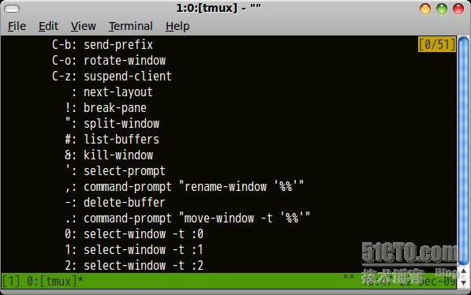
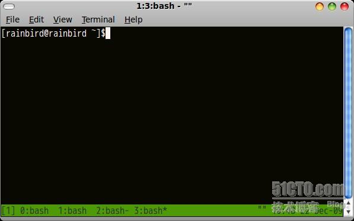
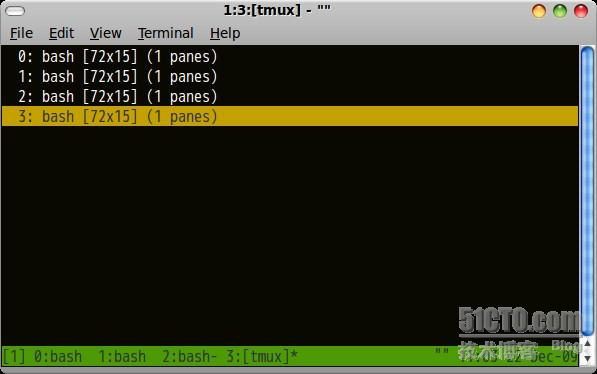
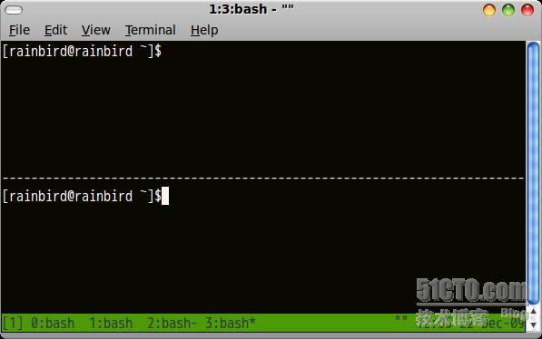
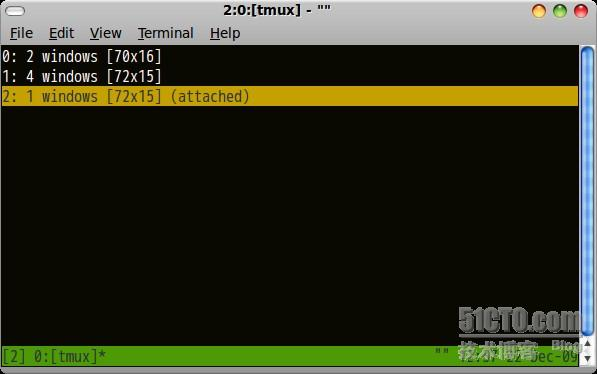
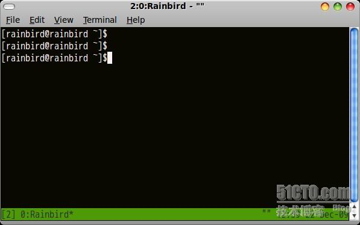
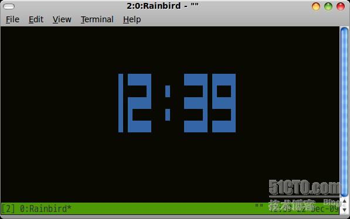
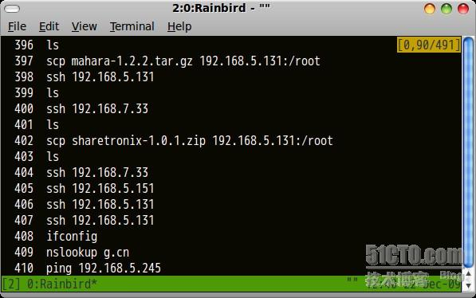
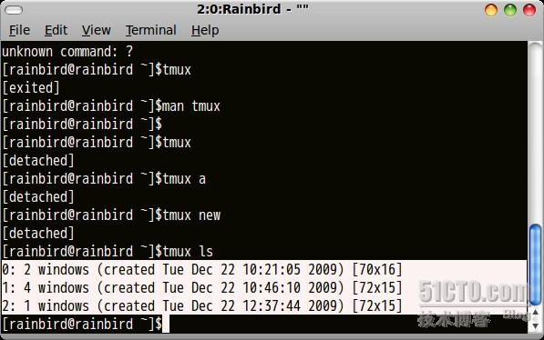

从 screen 切换到 tmux 不是平白无故的，自然有其充分的理由。我感觉使用 tmux 更加方便、灵活和高效。我非常喜欢 tmux 的这些方面：
- 垂直分割窗口，当然水平也是可以的
- vi 或 emacs 按键绑定模式
- 有多个粘贴缓冲，可完全由按键进行选取、复制、以及粘贴操作
- 配置很容易，尤其是状态行
- 脚本化，通过脚本可以方便的控制 tmux 会话
- 有预设布局，可搜索窗口，自动命名窗口名称
- 文档清晰、详尽
更改默认按键前缀
从 screen 切换到 tmux 十分平滑，tmux 的按键设置与 screen 大都相同，只是其默认按键前缀为 Ctrl-b。为了延续在 screen 中的使用习惯，我将其更改为 Ctrl-a。将下列内容加到 $HOME/.tmux.conf 中即可：
set -g prefix ^a
unbind ^b
bind a send-prefix
按键绑定
我还在 .tmux.conf 中定义了以下按键绑定：
- 水平或垂直分割窗口 (C+A+ :split-window + v/h)
unbind '"'
bind - splitw -v # 分割成上下两个窗口
unbind %
bind | splitw -h # 分割成左右两个窗口
- 选择分割的窗格
bind k selectp -U # 选择上窗格
bind j selectp -D # 选择下窗格
bind h selectp -L # 选择左窗格
bind l selectp -R # 选择右窗格
- 重新调整窗格的大小
bind-key J resize-pane -D 10
bind-key K resize-pane -U 10
bind-key H resize-pane -L 10
bind-key L resize-pane -R 10
- 交换两个窗格
bind ^u swapp -U # 与上窗格交换 Ctrl-u
bind ^d swapp -D # 与下窗格交换 Ctrl-d
- 执行命令，比如看 Manpage、查 Perl 函数
bind m command-prompt "splitw -h 'exec man %%'"
bind @ command-prompt "splitw -h 'exec perldoc -f %%'"
定制状态行
状态行左边默认就很好了，我对右边定制了一下，显示 uptime 和 loadavg：
set -g status-right "#[fg=green]#(uptime.pl)#[default] • #[fg=green]#(cut -d ' ' -f 1-3 /proc/loadavg)#[default]"
下面两行设置状态行的背景和前景色:
set -g status-bg black
set -g status-fg yellow
默认启动应用
当 tmux 启动时，可以默认启动一些应用：
new -s work # 新建名为 work 的会话，并启动 mutt
neww rtorrent # 启动 rtorrent
neww vim # 启动 vim
neww zsh
selectw -t 3 # 默认选择标号为 3 的窗口
在窗口中 C+a+? 命令帮助
复制与粘贴操作
- 按 C-a [ 进入复制模式，如果有设置
setw -g mode-keys vi 的话，可按 vi 的按键模式操作。移动至待复制的文本处，按一下空格，结合 vi 移动命令开始选择，选好后按回车确认。 - 按 C-a ] 粘贴已复制的内容。
重命名一个窗口：rename-window name
转：http://www.osmsg.com/2011/04/from-screen-to-tmux/
更多：
http://wiki.freebsdchina.org/software/t/tmux
http://www.dayid.org/os/notes/tm.html
常用命令：
- tmux #开启tmux
- tmux ls #显示已有tmux列表（C-b s）
- tmux attach-session -t 数字 #选择tmux
- C-b c 创建一个新的窗口
- C-b n 切换到下一个窗口
- C-b p 切换到上一个窗口
- C-b l 最后一个窗口,和上一个窗口的概念不一样哟,谁试谁知道
- c-b w 通过上下键选择当前窗口中打开的会话
- C-b 数字 直接跳到你按的数字所在的窗口
- C-b & 退出当前窗口
- C-b d 临时断开会话 断开以后,还可以连上的哟:)
- C-b " 分割出来一个窗口
- C-b % 分割出来一个窗口
- C-b o 在小窗口中切换
- C-b (方向键)
- C-b ! 关闭所有小窗口
- C-b x 关闭当前光标处的小窗口
- C-b t 钟表
- C-b pageup/pagedow
1.控制键
控制键就是tmux的主键.当你在tmux环境下按下这个键的时候,tmux就会把你后面输入的指令,解析成它内置的功能.tmux默认的控制键是ctrl+b(同时按下ctrl和b,在后面将直接用小写的c-b代替).这相当于screen的ctrl+a.同时用过两个工具的人总会争论ctrl+a和ctrl+b的合理性.估计争论的也就是emacs和vi党.我就很不理解.这两拨人只用编辑器,不用指令吗?因为他们似乎不知道在bash环境里:ctrl+a代表跳到命令的开始,而ctrl+b代表往回移动一格.从这一点讲,笔者觉得用c-b没啥不好的.因为你按着c-b不放,在bash环境里的功能依然有效:)
2.获取快捷键帮助
前面没有提,在这里要指出的一点就是,当你按c-b的时候,我希望你已经进入"tmux环境"了.进入的方法很简单.直接在命令行输入:tmux就可以了.没有的话,安装呗.幸运的是ubuntu9.10里已经集成了tmux.虽然不是最新版,但是免去了编译的麻烦:)现在按C-b ?

接下来要介绍的东西,就是这里面列出来的,一些普遍有用的东东.查看上面或者下面的内容,直接pageup,pagedown就可以了:)退出请按q(这个百试不爽,几乎是和tmux交互的时候,都可以用这个退出)
3.常用快捷键
c-b c 创建一个新的窗口
在你正后悔当前窗口被一个指令占用的时候,这个快捷键会解燃眉之急哟.当前窗口在任务栏会显示*

如上图,现在正在操作的窗口就是3了
C-b n 切换到下一个窗口
C-b p 切换到上一个窗口
C-b l 最后一个窗口,和上一个窗口的概念不一样哟,谁试谁知道
c-b w 通过上下键选择当前窗口中打开的会话

C-b 数字 直接跳到你按的数字所在的窗口
c-b & 退出当前窗口(个人觉得这个没多大用,因为笔者习惯上c-d退出bash.当然了,如果你确保其它窗口没有有用的程序正在运行,试试这个命令也不错)
C-b d 临时断开会话 断开以后,还可以连上的哟:)
4.分割窗口
vim中,可以直接:!命令,来执行命令,或者直接把命令的结果读到当前的编辑器.很多时候我们就是有这样一种需要,看一下上次的执行结果,而不想通过切换来实现.最初看到官方网站的图片可以,横着分,可以竖着分,挺酷的.不过到现在笔者也还不知道怎么紧着分:)
c-b " 分割出来一个窗口

c-b o 在小窗口中切换 这种方法一次只能切换一次,再想切换再c-b o,适合两个窗口的时候使用.如果在当前窗口分割了好多小窗口的话,就要用下面的两个指令了.
c-b (方向键)上 上一个窗口
c-b (方向键)下 下一个窗口 要指出的是,按一次c-b,可以上上下下的选,直到选到你想要的那个窗口,这点和c-b o不一样噢.
c-b ! 关闭所有小窗口
c-b x 关闭当前光标处的小窗口
5.切换到其它的会话
上面提到的都是窗口的概念,是在一个会话里建立多个窗口,在一个窗口里建立多个小窗口.而现在说是的会话的概念.你每次执行tmux就会新建一个会话,c-b d的时候就会保存退出一个会话.
c-b s 选择attach的会话

注意看哟，和上图显示的不一样
6.修改当前窗口名称
tmux允许你给不同的窗口指定不同的名字
c-b , 修改当前窗口名称

是不是将窗口的名字改成rainbird了?
7.显示一个钟表
其实简单的时候没啥大用处,就是一个屏保的作用,不过你可以通过设置配置文件,使从钟表退出来的时候要输入密码:)
c-b t 钟表

8.查看历史记录
这个是困扰了笔者很长时间的一个功能,因为一些命令执行的时候,显示结果总会超过一屏,而笔者不知道怎么向上翻页以看到前面的东西,直到后来才不经意的发现是用:
C-b pageup/pagedown

退出的话,当然还是用q了
9.复制粘贴:
复制东西在使用GNOME Terminal的时候效果不大明显,因为你可以通过鼠标上下翻页,可以左键选择东西,右键复制或者粘贴.单把这一点拿出来,是为了说明一种猜测和一种高效的移动习惯.在看tmux帮助的时候,笔者注意到,有说按完c-b以后,通过[进入复制模式.但是进来以后呢?界面类似翻看以前的历史记录.研究的许久才这样整明白,如果要使用这个功能,你得知道c-b :可以进入tmux的命令模式,然后可以设置一些指令.比如说,修改模式键setw
mode-keys vi.这样你就把当前模式改成了vi.再进入复制模式(c-b [)是不是可以通过j,k在字符里上下移动就像在vim里一样?
通过看帮助,vi和emacs的模式对照表
Function vi emacs
Start of line 0 or ^ C-a
Clear selection Escape C-g
Copy selection Enter M-w
Cursor down j Down
End of line $ C-e
Cursor left h Left
Next page C-f Page down
Next word w M-f
Previous page C-u Page up
Previous word b M-b
Quit mode q Escape
Cursor right l Right
Start selection Space C-Space
Cursor up k Up
你发现什么?我们之前上下翻页用的page up和page down,也可以用上下键.是不是说明了我们这前用的模式就是emacs呢?因为我们如果用ctrl+space选择东西的话,是永远不会成功呢,因为会被系统优先抢占,因为这两个键被定义到了切换输入法.所以,如果你想通过键盘用复制的功能的话,你最好先把模式改成vi,然后通过vi里支持的键选择.空格是选择的起点,然后上下或者左右移动选择到终点,回车,就把内容复制了.这样的一个好处就是你可以复制到不在当前屏幕里的东西!
10.常用参数
最后说一下tmux本身常用的几个参数吧:)
tmux ls 列出已有会话(list-sessions)

tmux a连接到这前断开的会话(attach-session) 默认会连接上图列出的id最小的会话,你也可以指定你想连接到哪个会话:tmux a -t 1来连接到第一个会话
tmux new创建新的会话(new-window) 当然了,不加这个参数也是会创建新会话的:)
关于tmux的介绍到这里就结束了.tmux是个利器,而这个利器是不是也成为你手上的利刃取决于你花多少心思来运用它.以上的一些技巧,你只会一些基本的指令,就可以大大提高工作效率了,还等什么?赶快行动起来吧:)
- tmux new-session -s session-name
-
- tmux kill-session -t session-name
-
- ctrl + a + : rename-window name
tmux new-session -s session-name
tmux kill-session -t session-name
ctrl + a + : rename-window name
tmux kill-session -t session-name
ctrl + a + : rename-window name

 目录视图
目录视图 摘要视图
摘要视图 订阅
订阅